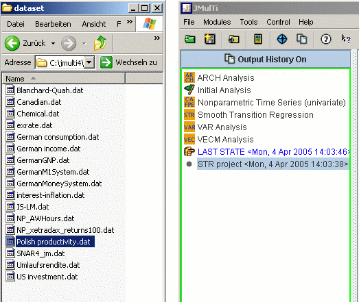

Drag and Drop
JMulTi has now support for drag and drop of data (see
import data) and project files
(suffix .jsc). The file should simply be
dragged, for example in a file browser, and then dropped
over the explorer panel in JMulTi. The program will then
take appropriate action according to the format of the
selected file. Only one file is processed per drop.

|